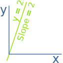
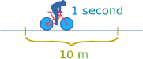

Second Derivative

A derivative basically gives you the slope of a function at any point.
The derivative of 2x is 2
Read more about derivatives if you don't already know what they are!
The "Second Derivative" is the derivative of the derivative of a function. So:
- Find the derivative of a function
- Then find the derivative of that
A derivative is often shown with a little tick mark: f'(x)
The second derivative is shown with two tick marks like this: f''(x)
Example: f(x) = x3
- Its derivative is f'(x) = 3x2
- The derivative of 3x2 is 6x
So the second derivative of f(x) is 6x:
f''(x) = 6x
A derivative can also be shown as dydx
and the second derivative shown as d2ydx2
Example: (continued)
The previous example could be written like this:
y = x3
dydx = 3x2
d2ydx2 = 6x
Distance, Speed and Acceleration
A common real world example of this is distance, speed and acceleration:
Example: A bike race!
You are cruising along in a bike race, going a steady 10 m every second.

Distance: is how far you have moved along your path. It is common to use s for distance (from the Latin "spatium").
Speed: is how much your distance s changes over time t ...
... and is the first derivative of distance with respect to time: dsdt
And we know you are doing 10 m per second, so: dsdt = 10 m/s
Acceleration: Now you start cycling faster! You increase your speed to 14 m every second over the next 2 seconds.
When you are accelerating your speed is changing over time.
So dsdt is changing over time!
| We could write it like this: |
|
||
| dt |
But it is usually written d2s dt2
Your speed increases by 4 m/s over 2 seconds, so:
d2s dt2 = 42 = 2 m/s2
Your speed changes by 2 meters per second per second.
And yes, "per second" is used twice!
It can be thought of as (m/s)/s but is usually written m/s2
(Note: in the real world your speed and acceleration changes moment to moment, but here we assume you are super steady!)
Here it is in one table:
| Example Measurement |
||
| Distance: | s | 100 m |
| First Derivative is Speed: | ds dt | 10 m/s |
| Second Derivative is Acceleration: | d2s dt2 | 2 m/s2 |
But wait, there is more!
The third derivative of position with respect to time (how acceleration changes over time) is called "Jerk" or "Jolt" !
We can actually feel Jerk when we start to accelerate, apply brakes or go around corners as our body adjusts to the new forces.
Engineers try to reduce Jerk when designing elevators, train tracks, etc.
Also:
- The fourth derivative of position with respect to time is called "Snap" or "Jounce"
- The fifth is "Crackle"
- The sixth is "Pop"
Yes, really!
They go: distance, speed, acceleration, jerk, snap, crackle and pop
Play With It
Here you can see the derivative f'(x) and the second derivative f''(x) of some common functions.
Notice how the slope of each function is the y-value of the derivative plotted below it.
For example, move to where the sin(x) function slope flattens out (slope=0), then see that the derivative graph is at zero. A similar thing happens between f'(x) and f''(x). Try this at different points and other functions.